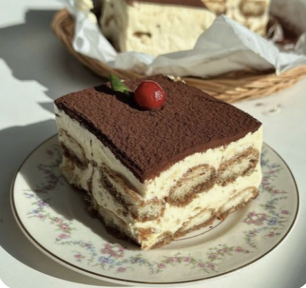
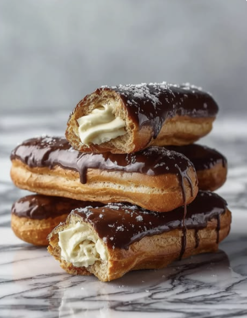

If you have a prefrence of fruits, sugar, and honey then sweet pastries are for you! There are many options in choosing a delicous sugary treat that can calm your sweet tooth!

Tiramisu is a great pastry if you like coffee, ladyfingers, mascarpone cheese, and cocoa powder. It is a wonderful and delicous treat to eat espically when you are reading a good book, watching a movie, or at a nice view.

Éclairs are an amazing pastry to eat. It has a unique dough that makes it have a crispy exterior and a hollow shell. Many have chocolate or coffee icing and pastry cream, pistachio, fruit flavors, chestnut purée, or whipped ganache.